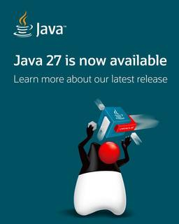
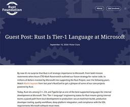
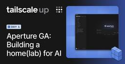

Publickey
https://www.publickey1.jp/
Enterprise ITに軸足を置き、新たにIT業界を変えつつあるクラウドコンピューティングやHTML5など最新の話題を、ブロガー独自の分析を交え、充実した記事で紹介するブログです。毎日更新しています。
フィード

PlanetScale、PostgreSQLのシャーディングを自動化して1億1800万QPSを達成。新DBサービス「Neki」をプレビュー公開 26
26
Publickey
データベースサービスを提供しているPlanetScaleは、PostgreSQLのシャーディングを自動化してスケーラブルなデータベースサービスを提供する「Neki」をプレビュー公開しました。 118,538,803 queries per ...
2日前

Devinが仮想環境でmacOSの提供開始。Macの実機不要でDevinがコード生成、テスト、デバッグ、実行、AppStore配信前のベータ公開まで実行 15
Publickey
コーディングAIエージェントを提供するDevinが、Devinがホストする仮想環境内でのmacOSの提供を開始しました。 Devinはこれまで仮想環境内でUbuntu LinuxおよびWindowsを提供しており、ここにmacOSが加わりま...
3日前

Android、パスキーをパスワードマネージャ間で転送可能に。Googleパスワードマネージャ、1Password、Bitwarden、Dashlaneなどが対応 20
Publickey
Googleは、Android上で利用可能なパスワードマネージャの間で、パスキーの転送を可能にしたと発表しました。 これにより、例えばGoogleパスワードマネージャに登録したパスキーを1PasswordやBitwardenなどの他のパスワ...
3日前

「Java 27」正式リリース。全環境でG1 GCがデフォルトに、TLS 1.3用に耐量子暗号のハイブリッドキー交換など新機能 49
Publickey
オラクルはJavaの最新バージョン「Java 27」正式版をリリースしました。 Java 27 is now available! #Java27 #JDK27 #OpenJDK Download now: https://t.co/0Zw...
4日前

オラクル、Javaのセキュリティパッチを毎月提供開始、AIが脆弱性の発見を加速しているとして 7
Publickey
オラクルは、これまで3カ月ごとに提供してきたJavaのアップデートパッチのサイクルを速め、1カ月ごとにセキュリティパッチを提供することを発表。先月（2026年8月）から実際にセキュリティパッチの提供が開始されていることを明らかにしました。 ...
4日前

AnthropicのMCP共同作者が来日、基調講演で語るこれからのMCP注力領域。AGNTCon＋MCPCon Japan 2026 12
Publickey
AIエージェントおよびMCP（Model Context Protocol）を主題としたイベント「AGNTCon＋MCPCon Japan 2026」が9月10日に東京渋谷のイベントホールで開催されました。主催はLinux Foundati...
5日前

OpenAIやAnthropicなどAIベンダごとのAPIの違いを吸収し統合する「Agent Router」、Linux Foundation傘下で業界標準へ 118
Publickey
MCPやAGENTS.md、Agent2AgentプロトコルなどのAIエージェントに関する関連技術の標準化推進や開発などを行うLinux Foundation傘下のAgentic AI Foundation（AAIF）は、オープンソースとし...
5日前

マイクロソフトがRust言語をC++/C#/TSに並ぶ社内のTier 1言語にしたことを明らかに。Windowsネイティブな社内の開発環境と統合 102
Publickey
マイクロソフト社内において、Rust言語がC++/C#/TypeScriptに並ぶTier 1言語になったことが明らかになりました。 マイクロソフトの開発部門でRustツールチームのプリンシパルエンジニア Victor Ciura氏がRus...
6日前
AIのせいでエンジニアの75％を解雇したCSSフレームワークのTailwind、Shopifyによる買収を発表。今後も安定的な開発を維持すると 122
Publickey
CSSフレームワーク「Tailwind CSS」の開発元であるTailwind Labsは、ECサイト構築サービスを提供しているShopifyによって買収されると発表しました。 下記はTailwindの作者であるAdam Wathan氏によ...
6日前

TailscaleのVPNにAIエージェントを組み込める「Aperture」正式リリース。AIによるTailscaleやノードの操作も可能に 34
Publickey
メッシュ型のVPNサービスを提供するTailscaleは、AIゲートウェイサービス「Aperture」の正式リリースを発表しました。 Aperture is officially GA.Give AI agents the models, ...
6日前

.NET 11リリース候補版が登場。.NETランタイムが非同期ネイティブ対応、プロセッサ数の上限がなくなる、AOTコンパイラによるネイティブバイナリの高速化など
Publickey
マイクロソフトは同社の包括的なアプリケーションフレームワークの次期版となる「.NET 11」の最初のリリース候補版となる「.NET 11 Release Candidate 1」を発表しました。 〰️ SAVE THE DATE 〰️.NE...
9日前
AWS、AIがフルスタックAWSアプリの基本コードを、セキュリティ、可観測性、インフラまで一気通貫で生成する「Nx Plugin for AWS 1.0」、オープンソースで公開
Publickey
Amazon Web Services（AWS）は、AIがフルスタックのAWSアプリケーションに必要なアプリケーションの基本的なコードに加えて、セキュリティや可観測性などの要件も備えたインフラ構成のコードもまとめて生成してくれるツール「Nx...
10日前
AWS、自然言語でデータ分析アプリを構築可能に、「Amazon Quick」に新機能
Publickey
Amazon Web Services（AWS）は、データ分析プラットフォーム「Amazon Quick」の新機能として、データ分析と表示を行うカスタムアプリケーションを自然言語の指示だけで構築できる新機能を発表しました。 Amazon Q...
10日前
Amazon Linuxが4年ぶりにメジャーバージョンアップ、「Amazon Linux 2027」パブリックプレビュー。SELinuxがデフォルトで強制モードに
Publickey
Amazon Web Services（AWS）は、AWSに最適化されたLinux OSの4年ぶりとなるメジャーバージョンアップ「Amazon Linux 2027」をパブリックプレビューとしてリリースしました。 現時点の正式版はAmazo...
11日前
巨大オンラインゲーム「EVE Online」。ゲームを支える240万行のPython 2.7のコードをPython 3へ移行すると発表
Publickey
宇宙を舞台にした世界最大級の大規模オンラインゲーム「EVE Online」が、ゲームを支える240万行のPythonコードをPython 3に移行すると発表しました。 We have officially started our codeb...
11日前